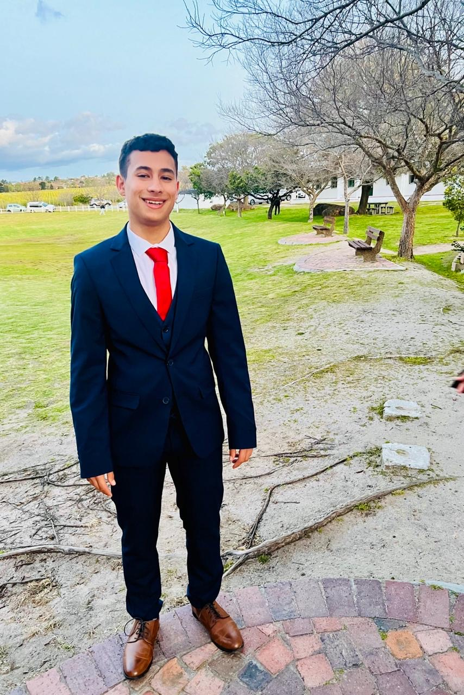

2nd year BSc (Hons) Cyber Security student at Nottingham Trent University with a first class average, who builds software and secure systems and is seeking a placement year in technology. I have been awarded the NTU Excellence Scholarship and the Ryland Consulting Award for exceptional performance on my course, making me the top of my cohort.
During my first year, I gained commercial experience at Eventim UK, generating over 1,700 qualified B2B leads for the events industry and managing lead data in Salesforce CRM. I also joined an international sales meeting with teams from seven countries which gave me exposure to performance analysis and global planning.
Alongside this, I led a team of five on a university Systems Analysis and Design project, where I planned and delegated tasks. I have also completed the Telstra Cyber Security Virtual Experience, applying structured problem-solving to a simulated incident response scenario.
Outside of tech, I taught English and led activities for up to 140 international students aged 12-18 as an EFL teacher and Activity Leader. I speak English (C2) and French (B1). I playn hockey, padel and enjoy hiking and running.
I understand that technology roles require more than technical ability. My experience in commercial environments, teaching and leadership have given me an early understanding of how organisations operate and make decisions. I am open to placement opportunities in Cyber Security, Software Engineering, Technology Consulting, Solutions Architecture and Business Analysis.
GitHub: traviscoenraad.github
LinkedIn: Travis Coenraad
